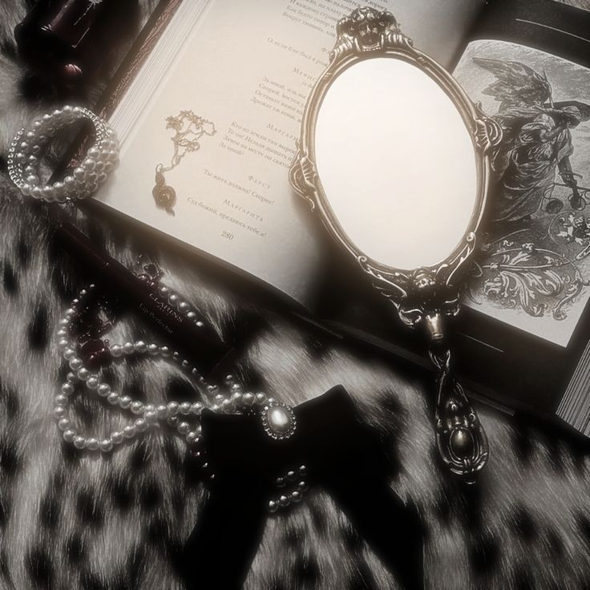
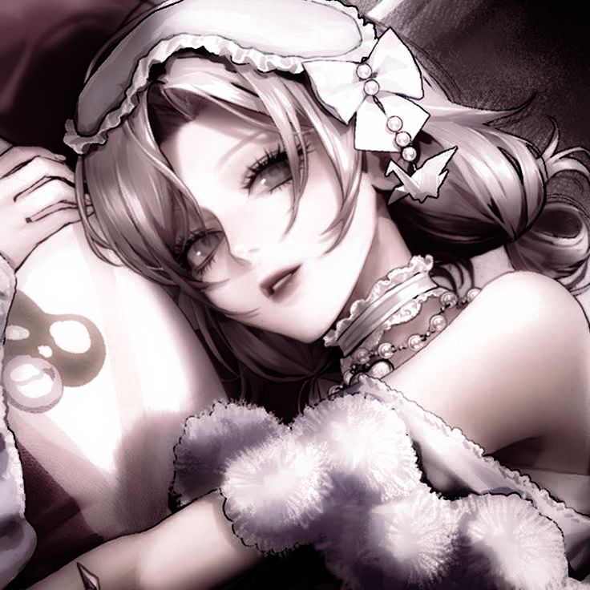
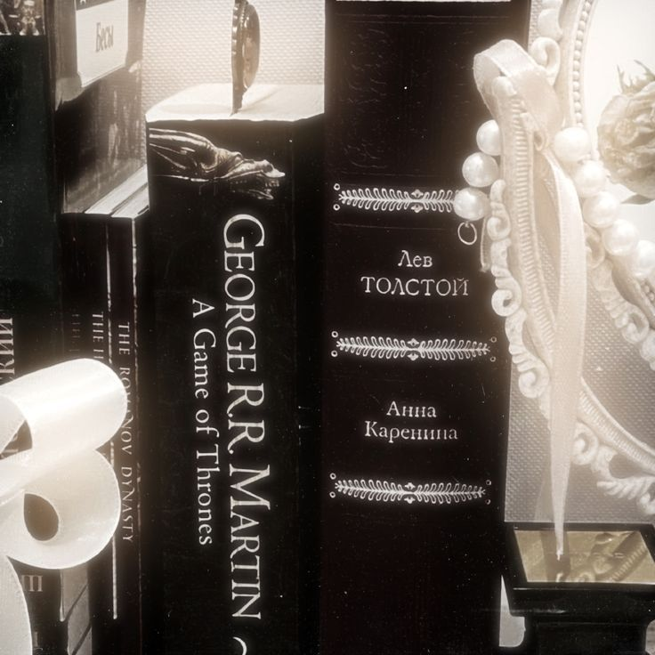

“Love is a teacher, but one must know how to acquire it, for it is acquired with difficulty, it is dearly bought, one must spend a great deal of labour and time on it, for we must love not only for a moment and fortuitously, but for ever.”
— The Brothers Karamazov by Fyodor Dostoyevsky
Hello! My name is Jen or Clovis. I am the programmer and developer for the mystery murder game "The Poisoned Pawn"
1. I like to read, I read anything really, I like classic literature, fantasy, and romance the most though
2. I tend to listen to music in my free time, mostly classical music or Vietnamese music
3. I have some younger classmates in dance that calls me "mom" for some reasons.